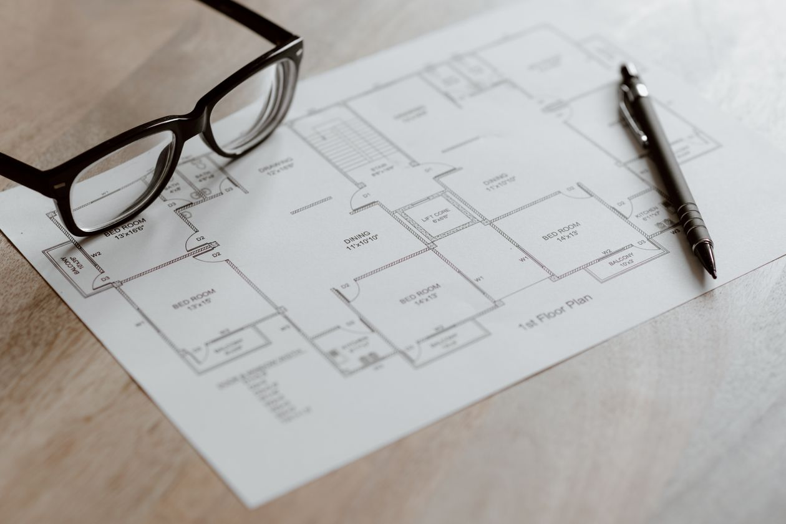
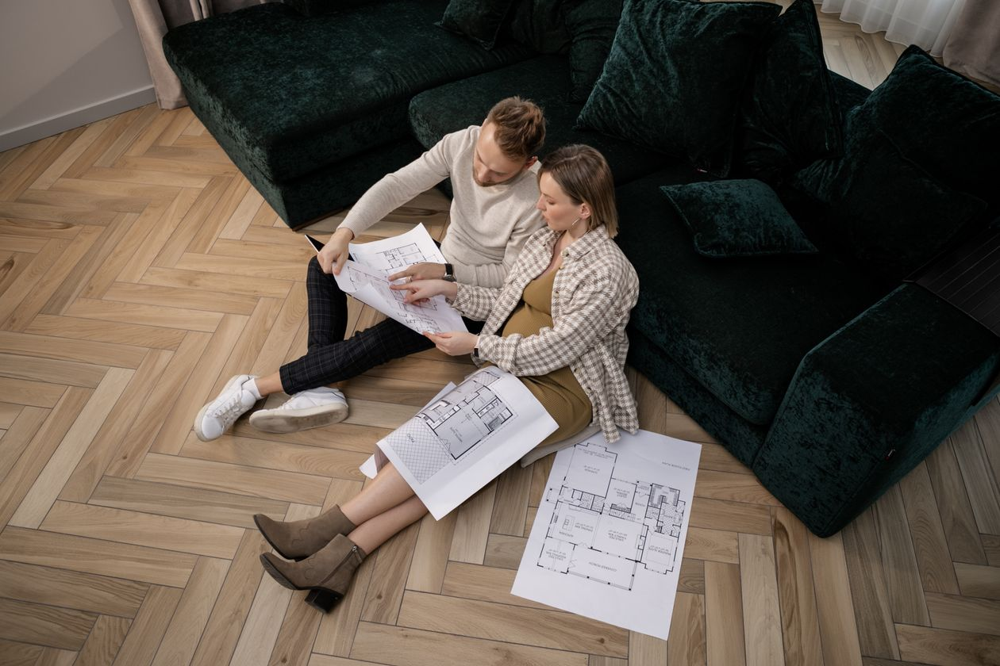

The reader
First I drew plans. Then I learned to read them.
Sowmya Rao, 47. Nine years at a drawing board in a Bengaluru architecture practice, then a vastu apprenticeship in Mysuru, then this studio. The order matters: I met the grid after I already knew what a wall costs.
The drawing board came first
From 2004 to 2013 I worked as a draughtsperson in an architecture practice in Bengaluru — floor plans, sections, the municipal submission sets, all of it at a board and then at a screen. I learned what clients never see: every line on a plan is a bill somebody will pay. A wall moved on paper costs an eraser. The same wall moved after the slab costs a month and a friendship with your contractor.
Families at the practice kept asking the vastu question in the corridor, after the meeting, as if it were slightly embarrassing. It isn't. It is a traditional way of arranging a house that many people I respect live by. So I went and learned it properly — two years with a teacher in Mysuru, reading plans against the nine-square grid the slow way, by hand, until the pada measurement was a habit and not a performance.
Since 2013 I have read plans from this studio in Koramangala: flats, houses still on paper, offices, one school. The reading is always the same shape. The grid goes over the plan. Each room is marked — agrees, also serves, works against. Corrections are ranked by cost. The report is written, signed, and priced from a printed table. If the plan already agrees with the grid, the report says so and runs short.
Two opinions I will not be talked out of
Demolition-first consulting is a sales method, not a reading method. A plan that is already built is a fact. Most conflicts in built homes are either acceptable to the grid or workable at the level of furniture, doors and use. In 214 readings I have recommended breaking a wall a handful of times — and every time, the report showed the measurement twice and named the cheaper readings that had been ruled out first.
Mirrors, pyramids and plants are not cures, and I do not sell them. The remedy kit is the other sales method: a conflict is found, and then an object is sold to stand in front of it. A mirror is for looking into. A plant is for watering. Neither moves a kitchen, and pretending otherwise is how this trade earns its reputation. If a room cannot move, I write that down and we work around it. Paper is cheaper than pyramids.
And the plain statement, once more
Vastu is a traditional practice. My clients choose it for their own reasons — family custom, a sense of order, care at the start of a house — and those reasons deserve respect, not a sales pitch built on fear. I do not claim a reading brings health, wealth, examination marks or peace of mind, and I do not let a report hint at it. What I can promise is narrower and checkable: the measurement will be right, the rules will be the printed ones, the corrections will be ranked by cost, and anything structural goes to a structural engineer before it comes to me.
- BasedKoramangala, Bengaluru
- Reading plans since2013
- Before that9 years draughting, architecture practice
- Trained2-year apprenticeship, Mysuru
- Plans read214
- ReportsWritten and signed, every one
- Remedy kits soldNone. There is no stock.


The centre stays open
The footer of every page on this site is a nine-cell grid with its centre left empty. That is not a decoration. It is the whole practice in one gesture: know what each square holds, and know which one to leave alone.